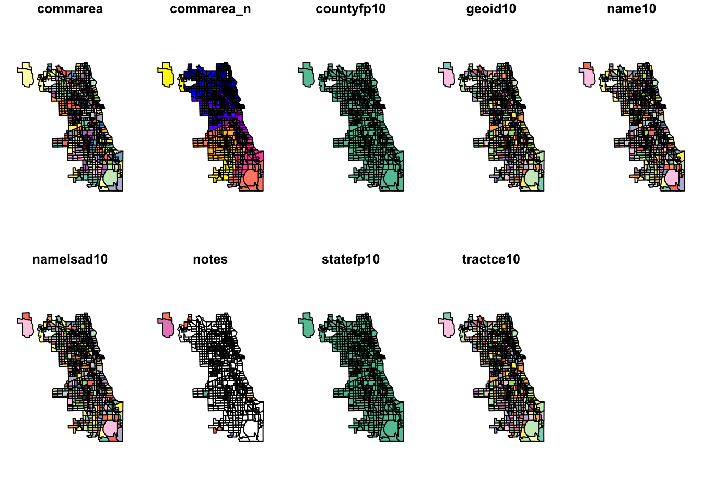
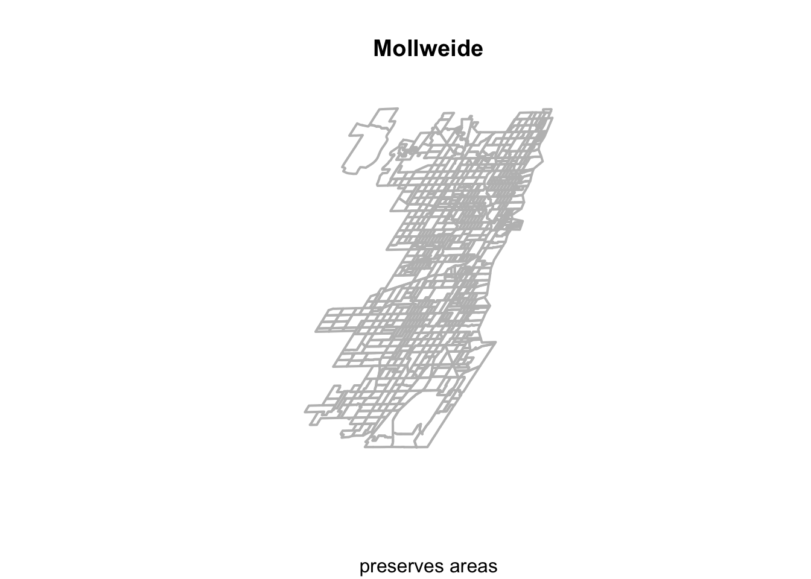
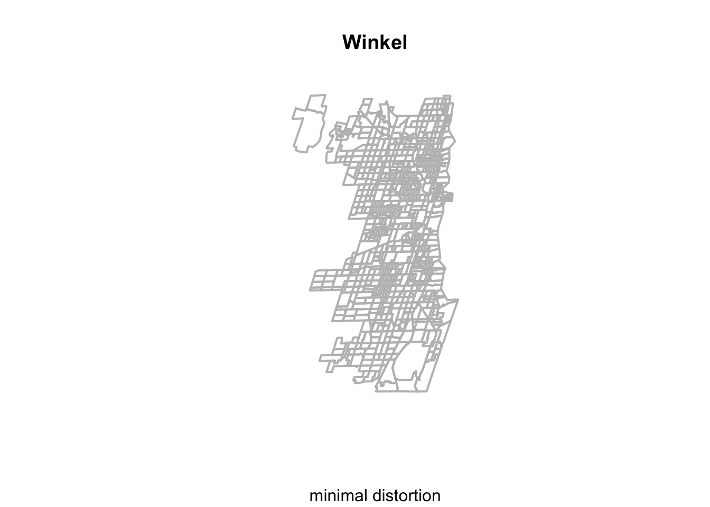
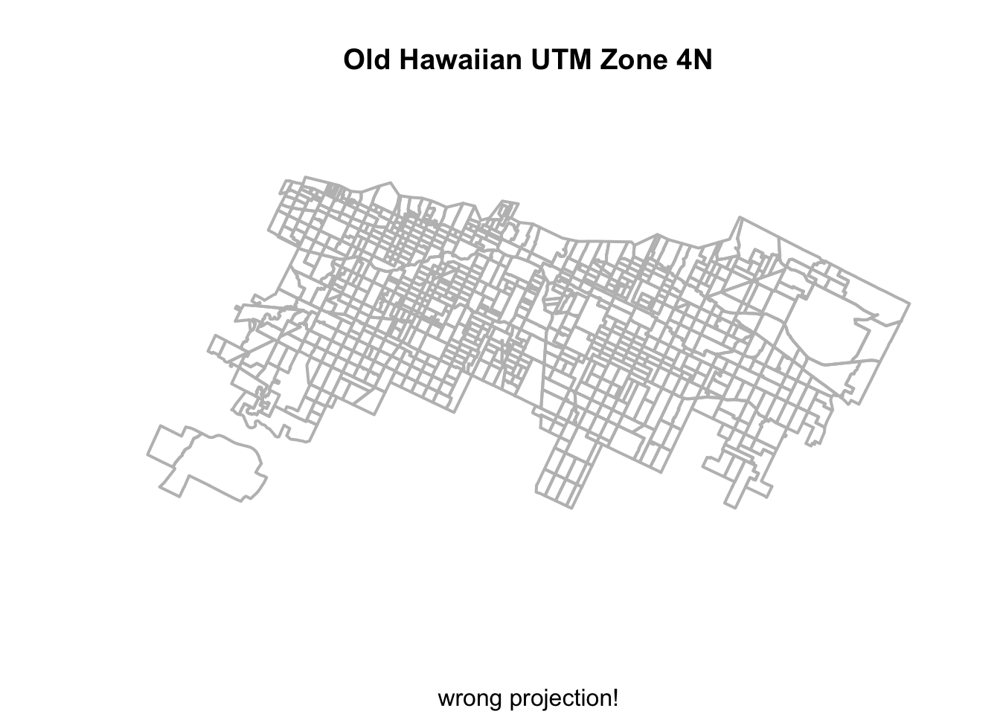
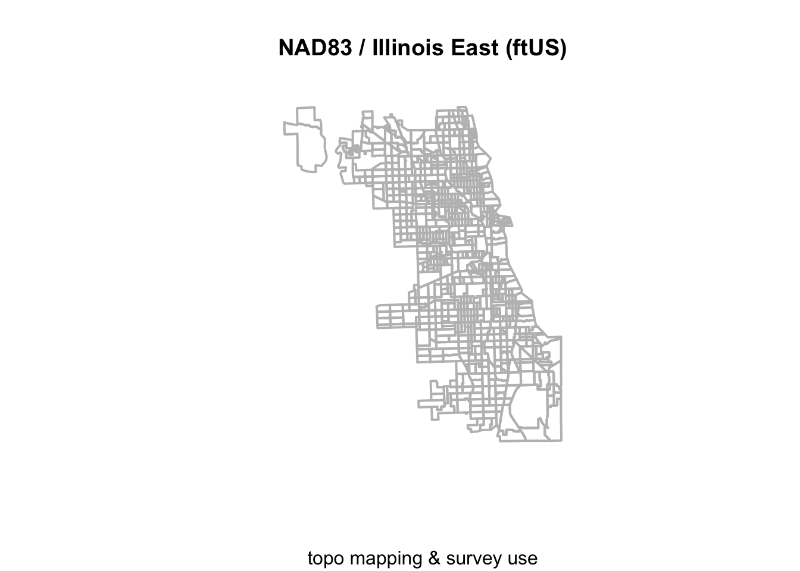
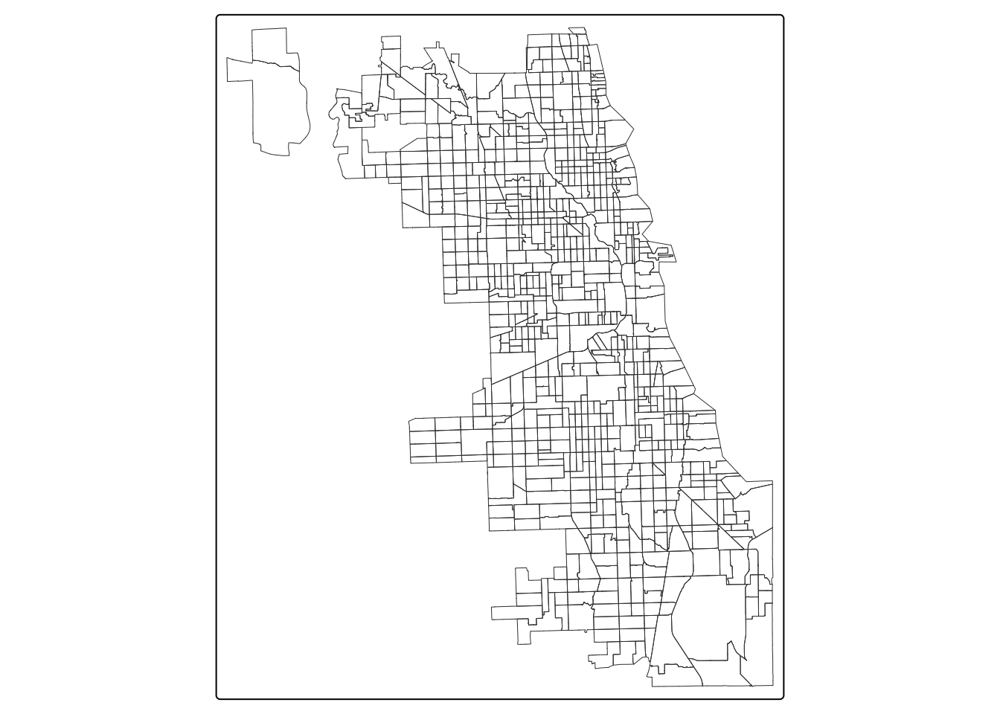
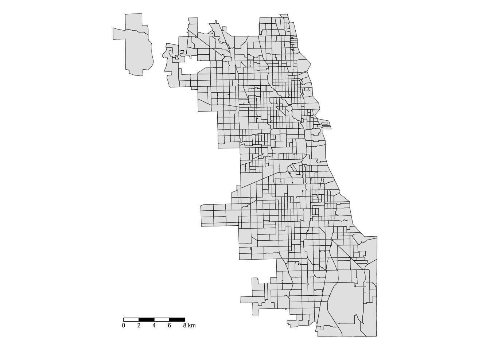

library(sf)Linking to GEOS 3.13.0, GDAL 3.8.5, PROJ 9.5.1; sf_use_s2() is TRUElibrary(tmap)We start our analysis with loading in our base data. Using Census tract boundaries downloaded from the City of Chicago data portal, we’ll do the following:
sf library & convert to a sf spatial objecttmap library.To replicate the code & functions illustrated in this tutorial, you’ll need to have R and RStudio downloaded and installed on your system. This tutorial assumes some familiarity with the R programming language.
Our input will be a shapefile of Chicago census tracts, as downloaded from the City of Chicago data portal in the early 2020s. Note that at least four files are required (.dbf, .prj, .shp, and .shx) to consitute a shapefile.
Chicago_Tracts.shpWe will output a tract dataset geopackage (.gpkg) in a different coordinate reference system that can be used for future analyses.
We will use the following packages in this tutorial:
sf: to manipulate spatial datatmap: to visualize and create mapsFirst, load the required libraries. Note: You may see messages about GEOS, GDAL, and PROJ. These refer to software libraries that allow you to work with spatial data.
library(sf)Linking to GEOS 3.13.0, GDAL 3.8.5, PROJ 9.5.1; sf_use_s2() is TRUElibrary(tmap)First we load in the shapefile containing the census tract data information and geographic boundaries.
Chi_tracts = st_read("data/Chicago_Tracts.shp")Reading layer `Chicago_Tracts' from data source
`/Users/maryniakolak/Code/opioid-environment-toolkit/data/Chicago_Tracts.shp'
using driver `ESRI Shapefile'
Simple feature collection with 801 features and 9 fields
Geometry type: POLYGON
Dimension: XY
Bounding box: xmin: -87.94025 ymin: 41.64429 xmax: -87.52366 ymax: 42.02392
Geodetic CRS: WGS84(DD)Always inspect data when loading in.
First we look at a non-spatial view.
head(Chi_tracts)Simple feature collection with 6 features and 9 fields
Geometry type: POLYGON
Dimension: XY
Bounding box: xmin: -87.68822 ymin: 41.72902 xmax: -87.62394 ymax: 41.87455
Geodetic CRS: WGS84(DD)
commarea commarea_n countyfp10 geoid10 name10 namelsad10 notes
1 44 44 031 17031842400 8424 Census Tract 8424 <NA>
2 59 59 031 17031840300 8403 Census Tract 8403 <NA>
3 34 34 031 17031841100 8411 Census Tract 8411 <NA>
4 31 31 031 17031841200 8412 Census Tract 8412 <NA>
5 32 32 031 17031839000 8390 Census Tract 8390 <NA>
6 28 28 031 17031838200 8382 Census Tract 8382 <NA>
statefp10 tractce10 geometry
1 17 842400 POLYGON ((-87.62405 41.7302...
2 17 840300 POLYGON ((-87.68608 41.8229...
3 17 841100 POLYGON ((-87.62935 41.8528...
4 17 841200 POLYGON ((-87.68813 41.8556...
5 17 839000 POLYGON ((-87.63312 41.8744...
6 17 838200 POLYGON ((-87.66782 41.8741...Try alternative view functions from the tidyverse like glimpse().
Note the last column; this is a spatially enabled column. The data is no longer a shapefile but an sf object, comprised of polygons.
We can use a baseR function to inspect the spatial dimension. The sf framework enables previews of each attribute in our spatial file.
plot(Chi_tracts)
Check out the data structure of this file… What object is it?
str(Chi_tracts)Classes 'sf' and 'data.frame': 801 obs. of 10 variables:
$ commarea : chr "44" "59" "34" "31" ...
$ commarea_n: num 44 59 34 31 32 28 65 53 76 77 ...
$ countyfp10: chr "031" "031" "031" "031" ...
$ geoid10 : chr "17031842400" "17031840300" "17031841100" "17031841200" ...
$ name10 : chr "8424" "8403" "8411" "8412" ...
$ namelsad10: chr "Census Tract 8424" "Census Tract 8403" "Census Tract 8411" "Census Tract 8412" ...
$ notes : chr NA NA NA NA ...
$ statefp10 : chr "17" "17" "17" "17" ...
$ tractce10 : chr "842400" "840300" "841100" "841200" ...
$ geometry :sfc_POLYGON of length 801; first list element: List of 1
..$ : num [1:243, 1:2] -87.6 -87.6 -87.6 -87.6 -87.6 ...
..- attr(*, "class")= chr [1:3] "XY" "POLYGON" "sfg"
- attr(*, "sf_column")= chr "geometry"
- attr(*, "agr")= Factor w/ 3 levels "constant","aggregate",..: NA NA NA NA NA NA NA NA NA
..- attr(*, "names")= chr [1:9] "commarea" "commarea_n" "countyfp10" "geoid10" ...Check out the coordinate reference system. What is it? What are the units?
st_crs(Chi_tracts)Coordinate Reference System:
User input: WGS84(DD)
wkt:
GEOGCRS["WGS84(DD)",
DATUM["WGS84",
ELLIPSOID["WGS84",6378137,298.257223563,
LENGTHUNIT["metre",1,
ID["EPSG",9001]]]],
PRIMEM["Greenwich",0,
ANGLEUNIT["degree",0.0174532925199433]],
CS[ellipsoidal,2],
AXIS["longitude",east,
ORDER[1],
ANGLEUNIT["degree",0.0174532925199433]],
AXIS["latitude",north,
ORDER[2],
ANGLEUNIT["degree",0.0174532925199433]]]Lets see how switching CRS changes our object. First we’ll try the Mollweide coordinate reference system that does a good job preserving area across the globe.
To transform our CRS, we use the st_transform function. To plot, we use baseR again but with some parameter updates. Finally, we check out the CRS of our new object. What are the units? Any other details to note? Will this be appropriate for our spatial analysis?
Chi_tracts.moll <- st_transform(Chi_tracts, crs="ESRI:54009")
plot(st_geometry(Chi_tracts.moll), border = "gray", lwd = 2, main = "Mollweide", sub="preserves areas")
st_crs(Chi_tracts.moll)Coordinate Reference System:
User input: ESRI:54009
wkt:
PROJCRS["World_Mollweide",
BASEGEOGCRS["WGS 84",
DATUM["World Geodetic System 1984",
ELLIPSOID["WGS 84",6378137,298.257223563,
LENGTHUNIT["metre",1]]],
PRIMEM["Greenwich",0,
ANGLEUNIT["Degree",0.0174532925199433]]],
CONVERSION["World_Mollweide",
METHOD["Mollweide"],
PARAMETER["Longitude of natural origin",0,
ANGLEUNIT["Degree",0.0174532925199433],
ID["EPSG",8802]],
PARAMETER["False easting",0,
LENGTHUNIT["metre",1],
ID["EPSG",8806]],
PARAMETER["False northing",0,
LENGTHUNIT["metre",1],
ID["EPSG",8807]]],
CS[Cartesian,2],
AXIS["(E)",east,
ORDER[1],
LENGTHUNIT["metre",1]],
AXIS["(N)",north,
ORDER[2],
LENGTHUNIT["metre",1]],
USAGE[
SCOPE["Not known."],
AREA["World."],
BBOX[-90,-180,90,180]],
ID["ESRI",54009]]Next, we’ll try the Winkel CRS, which is a compromise projection that facilitates minimal distortion for area, distance, and angles. We use the same approach, recyling the code with new inputs.
Chi_tracts.54019 = st_transform(Chi_tracts, crs="ESRI:54019")
plot(st_geometry(Chi_tracts.54019), border = "gray", lwd = 2, main = "Winkel", sub="minimal distortion")
st_crs(Chi_tracts.54019)Coordinate Reference System:
User input: ESRI:54019
wkt:
PROJCRS["World_Winkel_II",
BASEGEOGCRS["WGS 84",
DATUM["World Geodetic System 1984",
ELLIPSOID["WGS 84",6378137,298.257223563,
LENGTHUNIT["metre",1]]],
PRIMEM["Greenwich",0,
ANGLEUNIT["Degree",0.0174532925199433]]],
CONVERSION["World_Winkel_II",
METHOD["Winkel II"],
PARAMETER["Longitude of natural origin",0,
ANGLEUNIT["Degree",0.0174532925199433],
ID["EPSG",8802]],
PARAMETER["Latitude of 1st standard parallel",50.4597762521898,
ANGLEUNIT["Degree",0.0174532925199433],
ID["EPSG",8823]],
PARAMETER["False easting",0,
LENGTHUNIT["metre",1],
ID["EPSG",8806]],
PARAMETER["False northing",0,
LENGTHUNIT["metre",1],
ID["EPSG",8807]]],
CS[Cartesian,2],
AXIS["(E)",east,
ORDER[1],
LENGTHUNIT["metre",1]],
AXIS["(N)",north,
ORDER[2],
LENGTHUNIT["metre",1]],
USAGE[
SCOPE["Not known."],
AREA["World."],
BBOX[-90,-180,90,180]],
ID["ESRI",54019]]We could also try a totally different projection, to see how that changes our spatial object. Let’s use the “Old Hawaiian UTM Zone 4n” projection, with the EPSG identified from an online search. How does this fare?
Chi_tracts.Hawaii = st_transform(Chi_tracts, crs="ESRI:102114")
plot(st_geometry(Chi_tracts.Hawaii), border = "gray", lwd = 2, main = "Old Hawaiian UTM Zone 4N", sub="wrong projection!")
Finally.. let’s choose a projection that is focused on Illinois, and uses distance as feet or meters, to make it a bit more accessible for our work. EPSG:3435 is a good fit:
Chi_tracts.3435 <- st_transform(Chi_tracts, "EPSG:3435")
# Chi_tracts.3435 <- st_transform(Chi_tracts, 3435)
st_crs(Chi_tracts.3435)Coordinate Reference System:
User input: EPSG:3435
wkt:
PROJCRS["NAD83 / Illinois East (ftUS)",
BASEGEOGCRS["NAD83",
DATUM["North American Datum 1983",
ELLIPSOID["GRS 1980",6378137,298.257222101,
LENGTHUNIT["metre",1]]],
PRIMEM["Greenwich",0,
ANGLEUNIT["degree",0.0174532925199433]],
ID["EPSG",4269]],
CONVERSION["SPCS83 Illinois East zone (US survey foot)",
METHOD["Transverse Mercator",
ID["EPSG",9807]],
PARAMETER["Latitude of natural origin",36.6666666666667,
ANGLEUNIT["degree",0.0174532925199433],
ID["EPSG",8801]],
PARAMETER["Longitude of natural origin",-88.3333333333333,
ANGLEUNIT["degree",0.0174532925199433],
ID["EPSG",8802]],
PARAMETER["Scale factor at natural origin",0.999975,
SCALEUNIT["unity",1],
ID["EPSG",8805]],
PARAMETER["False easting",984250,
LENGTHUNIT["US survey foot",0.304800609601219],
ID["EPSG",8806]],
PARAMETER["False northing",0,
LENGTHUNIT["US survey foot",0.304800609601219],
ID["EPSG",8807]]],
CS[Cartesian,2],
AXIS["easting (X)",east,
ORDER[1],
LENGTHUNIT["US survey foot",0.304800609601219]],
AXIS["northing (Y)",north,
ORDER[2],
LENGTHUNIT["US survey foot",0.304800609601219]],
USAGE[
SCOPE["Engineering survey, topographic mapping."],
AREA["United States (USA) - Illinois - counties of Boone; Champaign; Clark; Clay; Coles; Cook; Crawford; Cumberland; De Kalb; De Witt; Douglas; Du Page; Edgar; Edwards; Effingham; Fayette; Ford; Franklin; Gallatin; Grundy; Hamilton; Hardin; Iroquois; Jasper; Jefferson; Johnson; Kane; Kankakee; Kendall; La Salle; Lake; Lawrence; Livingston; Macon; Marion; Massac; McHenry; McLean; Moultrie; Piatt; Pope; Richland; Saline; Shelby; Vermilion; Wabash; Wayne; White; Will; Williamson."],
BBOX[37.06,-89.27,42.5,-87.02]],
ID["EPSG",3435]]plot(st_geometry(Chi_tracts.3435), border = "gray", lwd = 2, main = "NAD83 / Illinois East (ftUS)", sub="topo mapping & survey use")
We transformed our Chicago tract spatial dataset to a coordinate reference system that is appropriate for Illinois-specific analysis, using a distance measure that is interpretable for our purposes. Let’s write that file to our directory.
We’ll write to a new, elegant spatial data format, the geopackage. Uncomment the line, and run.
#st_write(Chi_tracts.3435, "data/ChiTracts-3435.gpkg")Now we’ll switch to a more extensive cartographic mapping package, tmap, to map our data.
We approach mapping with one layer at a time. Always start with the object you want to map by calling it with the tm_shape function. Then, at least one descriptive/styling function follows. There are hundreds of variations and paramater specifications, so take your time in exploring tmap and the options.
Here we style the tracts with some semi-transparent borders.
tm_shape(Chi_tracts.3435) +
tm_borders(lwd = 0.5) 
Next we fill the tracts with a light gray, and adjust the color and transparency of borders. We also add a scale bar, positioning it to the left and having a thickness of 0.8 units, and turn off the frame. See more specifications for ‘tm_polygons’ at tmap documentations.
tm_shape(Chi_tracts) +
tm_polygons(
fill = "gray90", #fill color
col = "gray10", #border color
lwd = 0.5 #line width
) +
tm_scalebar(position = c("bottom","left"), lwd = 0.8) +
tm_layout(frame = FALSE)
Check out the tmap Reference manual for more ideas!
On spatial data basics & sf:
On projections:
On tmap: